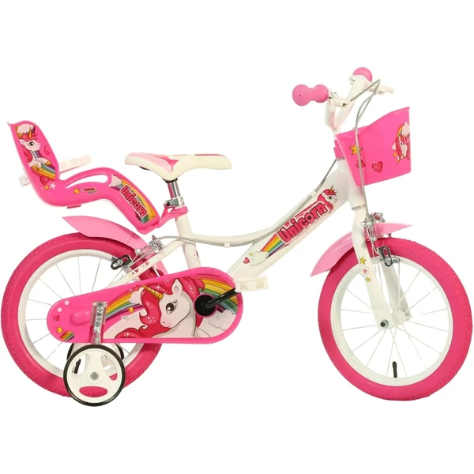
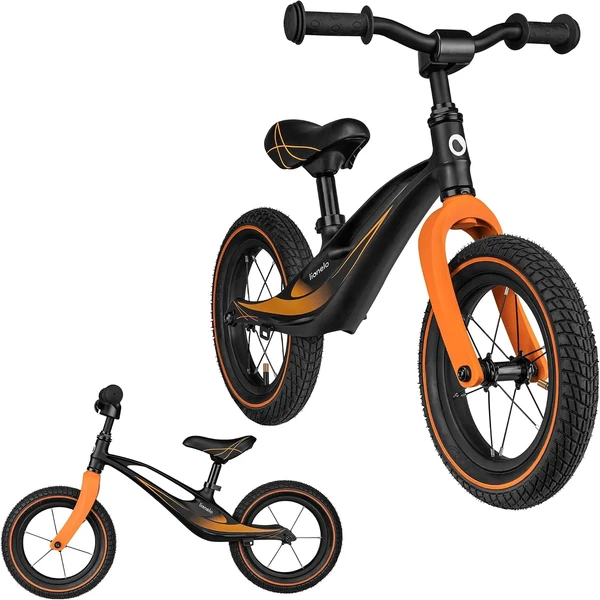
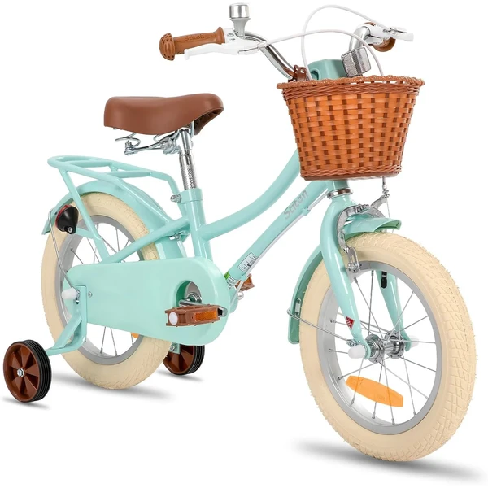
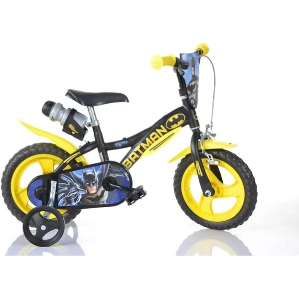

Dino Bikes Unicorn 16 Pulgadas
Una bicicleta de 16 pulgadas con diseño de unicornio en blanco y rosa, neumáticos reales, estabilizadores desmontables para aprender a equilibrarse sin miedo, y sillín y manillar ajustables para crecer con el niño.
⭐ ¿Por qué nos gusta?
- ✔ Neumáticos reales de goma, no EVA, para mejor tracción.
- ✔ Estabilizadores desmontables cuando ganen equilibrio.
- ✔ Sillín y manillar regulables para crecer con el niño.
💬 Lo que más destacan las familias
Lo que más suele gustar es lo fácil que resulta soltar los estabilizadores cuando llega el momento, sin que la bicicleta pierda estabilidad. También se comenta que el diseño de unicornio engancha desde el primer día, así que apetece salir a pedalear.
Ver en Amazon

JOYSTAR Bicicleta Fantasy Princess
Disponible en tamaños de 12 a 20 pulgadas con diseño retro princess de colores brillantes. Incluye cesta delantera, estabilizadores ajustables, frenos duales y protector de cadena cerrado para seguridad total. Ya viene 85% montada.
⭐ ¿Por qué nos gusta?
- ✔ Disponible en cinco tamaños para diferentes edades.
- ✔ Cesta incluida para transportar cosas mientras pedalea.
- ✔ Frenos duales y protección de cadena cerrada.
💬 Lo que más destacan las familias
Muchos padres coinciden en que la cesta delantera le da un aire de aventura al paseo, porque los niños la usan para llevar sus juguetes favoritos. También gusta que venga casi montada de fábrica, así que se puede usar prácticamente nada más sacarla de la caja.
Ver en Amazon

Lionelo Bart Balance Bike
Una bicicleta sin pedales de equilibrio con cuadro de magnesio ultraligero que aguanta hasta 30 kg. Perfecta para niños que aún no dominan bien los pedales o para introducir el concepto de balance de forma segura y sin presión.
⭐ ¿Por qué nos gusta?
- ✔ Cuadro de magnesio: ultra ligera y fácil de llevar.
- ✔ Sin pedales: enseña equilibrio antes que pedaleo.
- ✔ Manillar limitado y puños antideslizantes para seguridad.
💬 Lo que más destacan las familias
Los compradores valoran especialmente lo ligera que resulta, porque los niños la manejan solos sin esfuerzo desde el principio. También se comenta que ayuda a coger equilibrio de forma natural, sin la frustración de los pedales antes de tiempo.
Ver en Amazon

STITCH Manchi 12-18 Pulgadas
Bicicleta versátil disponible en cuatro tamaños (12, 14, 16 y 18 pulgadas) con cesta especial para muñecas y juguetes, estabilizadores extraíbles y cuadro de acero resistente. Frenos de mano duales para máxima seguridad.
⭐ ¿Por qué nos gusta?
- ✔ Cesta especial para muñecas y juguetes favoritos.
- ✔ Disponible en cuatro tamaños diferentes.
- ✔ Asiento de liberación rápida para ajuste fácil.
💬 Lo que más destacan las familias
Una de las cosas más comentadas es la cesta pensada para muñecas y juguetes, que hace que los paseos se conviertan en pequeñas aventuras. También se valora que se pueda ajustar el asiento fácilmente a medida que el niño crece.
Ver en Amazon

SCH Roses 20 Pulgadas
Una bicicleta de 20 pulgadas con estructura robusta de acero, recomendada para niños de 6 a 10 años (entre 120 y 155 cm de altura). Sillín ajustable hasta 695 mm para crecer con el niño durante varios años sin necesidad de cambiar de bici.
⭐ ¿Por qué nos gusta?
- ✔ Estructura de acero muy resistente y duradera.
- ✔ Sillín ajustable en rango amplio de altura.
- ✔ Tamaño perfecto para niños de 6 a 10 años.
💬 Lo que más destacan las familias
Se repite bastante el comentario de que aguanta bien el ritmo de uso diario sin dar problemas, algo que se agradece con niños que le dan mucha caña. También gusta que el sillín tenga tanto recorrido, porque la bici sigue sirviendo aunque el niño pegue el estirón.
Ver en Amazon

Dino Bikes Batman 14 Pulgadas
Una bicicleta de 14 pulgadas con diseño de Batman, certificada TÜV y CE con 90% de montaje previo. Apta para niños de 4 a 7 años, con altura de cuerpo entre 95 y 115 cm. Muy práctica: lista para usar en pocos pasos sin necesidad de herramientas especializadas.
⭐ ¿Por qué nos gusta?
- ✔ Certificación TÜV y CE: seguridad garantizada.
- ✔ 90% premontada: lista para usar en minutos.
- ✔ Diseño Batman atractivo para fans de superhéroes.
💬 Lo que más destacan las familias
Entre los comentarios más habituales aparece lo rápido que se prepara para usar nada más sacarla de la caja, sin líos de montaje. El diseño de Batman también es de lo más celebrado, sobre todo entre los fans del personaje.
Ver en Amazon